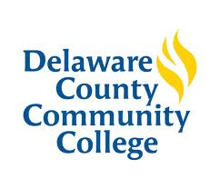
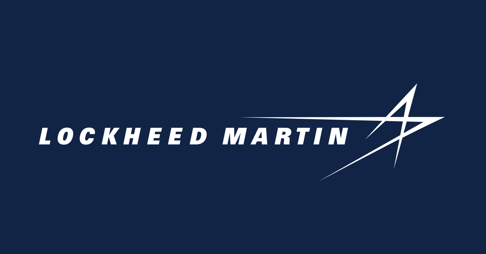
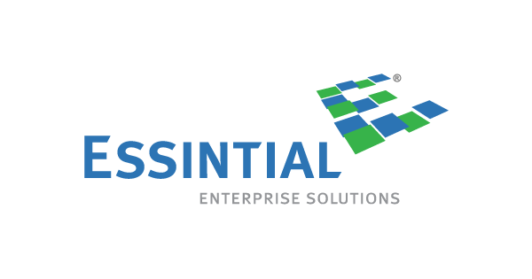
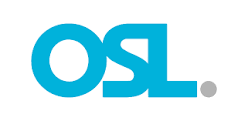

About
Software developer & Computer and electrical Engineer.
Information about
- Birthday: 4 May 2002
- linkedin: https://www.linkedin.com/in/oluwatomiyin-akinbo-400589215/
- Phone: +1 484-844-3048
- City: Philadelphia, USA
- Age: 21
- Degree: Associates, Bachelors
- Email: tomiyinakinbo@outlook.com
Software Developer & Computer and Electrical Engineer with expertise in various programming languages and hardware systems. Passionate about technology and dedicated to creating innovative solutions. Skilled in software development, electrical engineering, and problem-solving. Strong communication and teamwork abilities. Constantly seeking new challenges to enhance skills and contribute to technological advancements.
Skills
Resume
Education
A.S COMPUTER ENGINEERING
2019 - 2022
Delaware county community college, Media, PA
B.S ELECTRICAL AND COMPUTER ENGINEERING, MINOR IN FINANCE
2022 - 2025
DREXEL UNIVERSITY, Philadelphia, PA
Professional Experience
College tech sr Software engineer intern
MAY 2023 - AUGUST 2023
LOCKHEED MARTIN RMS DIVISION, King of Prussia, PA
- Collaborated with a team of software developers to design, develop, document, test, and debug software solutions for business/mission problems using data processing equipment.
- Proficient in the entire software development life cycle, including requirements gathering, design, development, testing, and maintenance.
- Demonstrated familiarity with computer hardware, software, and programming initiatives, utilizing operating systems like Windows and Linux.
- Excellent communication skills, capable of presenting complex technical information to both technical and non-technical audiences.
- Paid strong attention to detail, ensuring the creation of clean and efficient code.
Field Engineer
2022 - Present
Essintial Enterprise Solutions, CAMP HILL, PA
- Responded to customer callouts and field dispatches, promptly addressing service or repair needs.
- Conducted routine equipment servicing in the field, inspecting and troubleshooting equipment failures.
- Performed equipment repairs and replaced faulty parts while also installing and testing new equipment.
- Maintained equipment stock in the company vehicle and completed thorough job reports.
- Provided preventive maintenance for equipment and delivered technical training on new equipment installations.
Mobile Expert
2021 - 2022
Outsource Leadership
- Provided exceptional customer service at the Wireless store, greeting customers and assessing their needs.
- Exceeded monthly revenue goals by acquiring new customer accounts and maximizing existing customers' accounts.
- Excelled in quality metrics, ensuring a high level of service satisfaction.
- Actively participated in marketing efforts, including outbound calling, community involvement, outreach programs, and promoting the brand both inside and outside the retail location.
Achievements
Below are a list of Achievements i have attained
Operating Systems
I undertook the challenging task of designing and developing a fully functional operating system with Linux-based kernels, showcasing my advanced technical skills and innovative mindset in the realm of operating systems. Drawing upon my deep understanding of operating system principles, kernel architecture, and system-level programming, I embarked on the creation of an operating system from scratch. By implementing critical components such as process scheduling, memory management, file systems, and device drivers, I ensured the seamless functioning of the operating system. Leveraging programming languages like C and C++, I meticulously coded and debugged complex system-level functionalities. Through rigorous testing and debugging, I established the stability, efficiency, and reliability of the operating system. I proudly presented this achievement in various technical forums, where industry professionals and peers provided positive feedback, acknowledging my technical expertise and visionary approach. This accomplishment not only exemplifies my proficiency in operating system development but also underscores my passion for pushing the boundaries of innovation in the field.
AI
I successfully conceived and developed an innovative concept of artificial intelligence (AI) as a personal project. This groundbreaking AI concept utilizes cutting-edge technologies to solve basic problems and enhance efficiency. Through extensive research and development, I designed and implemented the underlying algorithms and models for the AI system, focusing on achieving accuracy and adaptability. Leveraging machine learning and deep learning techniques, I trained the AI model and achieved impressive results in terms of accuracy and performance. I conducted thorough testing and validation to ensure the reliability and robustness of the AI concept. Additionally, I had the opportunity to present the concept and its potential applications in various forums, where it received positive feedback from my teachers back home in Nigeria This achievement showcases my passion for AI research, strong technical skills, and ability to innovate and push boundaries in the field of artificial intelligence.
School competition
I had the honor of representing my high school in the GTB Bank technology competition, where we showcased our school's expertise and innovation in the field. As part of a dedicated team, we developed a project that demonstrated our school's prowess. Through collaborative efforts, we conceptualized, designed, and implemented the project, highlighting our strong teamwork and problem-solving skills. During the competition, I confidently presented our project, effectively conveying its key features, benefits, and technical details to the judges and audience. Our project received positive recognition, showcasing our school's commitment to excellence in technology education. This opportunity allowed us to leave a lasting impression, highlighting our school as a hub for technological talent and innovation. This achievement reflects my dedication, technical skills, and ability to collaborate effectively as a team member. It also emphasizes my strong communication and presentation abilities, leaving a lasting impact on the competition organizers and participants.
Contact
Hello!! thank you for taking the time to go through my Website, please contact me for further questions or to reach out! Thank you!
Location:
Greater Philadelphia area, PA
Email:
oa448@drexel.edu
Call:
+1 484-844-3048